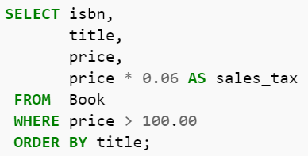

Data Analytics
Accounting Architecture

Data analytics is the ability to find answers in data. Paired with reporting, the final step in the use section of the information life cycle, it is the ability to create information from data. This skill involves more than software, but the proper analytical software tool is a necessary part of the process.
Accounting Skills
Accounting firms want accountants with data analytics skills because data analytics improves compliance and assurance. Historically, internal and external auditors have reviewed a sample of transactions to conclude whether financial statement numbers are fairly represented and to look for the potential for fraud. More powerful analytical tools paired with increased ability to store data on financial transactions has created the opportunity for analyzing the entire population of transactions and not only a sample. This leads to greater assurance and greater ability to find fraud. The tax function also benefits because it can have increased assurance of the accuracy of tax numbers.
Hot(test) Topic
Industry firms also desire data analytics skills. The Information Era is a primary reason for this desire. Firms, such as Google and Facebook, have made billions of dollars without many physical assets to speak of because they have acquired data about consumer markets that they could sell. Firms have paid for this data because they believe that it contains information that will increase their profitability. Likewise, firms have begun to collect similar data for themselves with the same goal in mind. The Information Era has taught us that the firm with the best information wins.
Not Only Big Data
Much of this data is Big Data in the sense that it has high volume, velocity, and variety, and the desire for data analytics skills is related to the difficulty in finding answers in Big Data. As a result, some prefer the moniker &lquo;Big Data analytics,” but data analytics is not only for Big Data, especially in an accounting context. Traditional financial data is not necessarily in the realm of Big Data, but data analytics improves the analysis of this data for compliance and decision making purposes. Furthermore, much of Big Data is unrelated to accounting, audit, and tax compliance, so data analytics from the perspective of an accountant will not automatically imply Big Data.
But Still Big Data
That being said, the analysis of Big Data should matter to accountants. The premise of accounting architecture is that both traditional financial data and Big Data are useful for decision making and that accountants should be the stewards of all types of information. Accountants deal not only with regulatory compliance, but also with internal decision making. Any data that supports internal stakeholders is the purview of accountants.
Analytical Tools
The ability to perform data analytics relies in part on familiarity with analytical tools. Some of these tools are proprietary graphical applications, but several are text-based tools that require knowledge of command syntax. Some tools focus specifically on data analysis, whereas others are general-purpose tools that have proven valuable for data analytics. Despite the existence of proprietary tools, open source dominants the field of data analytics.
SQL
Structured Query Language is the language for interacting with relational databases to create, modify, and retrieve data. (Although the name NoSQL literally stands for “Not Only SQL,” NoSQL databases have little to no support for SQL, and instead rely on other languages for data manipulation.) Because of the prevalence of relational databases and ease of use, SQL remains a popular tool, and an increasing number of Big Data and data analytics systems have added support for this language.
JavaScript
Although JavaScript is a general purpose programming language—it is especially useful for web development—it is valuable for data analytics because of its ability to interact with NoSQL databases, especially document stores using JavaScript Object Notation (JSON), which is a metadata framework similar to XML.
Python and PERL
Python and PERL are two other general purpose languages. However, because they rely heavily on regular expressions (Regex), which are sequences of characters that allow for convenient retrieval of strings in text files, they are useful for data, and specifically textual analysis. One use might be to look for specific words in the body of all Twitter posts.
Regex Humor

R
OLAP
Hadoop
Spark
Not Excel
Accounting-specific Tools
More than Tools
Accounting Tie-in
Even if it is difficult to believe that accounting architecture is the future of the accounting profession, data analytics is an important part of the current professional landscape. In fact, the desire for data analytics is one reason for the value of accounting architecture. Employers want accountants with data analytics skills, and those who understand the information system and the information life cycle the best are best able to find answers in the data. Additionally, the best information systems will be most capable of acquiring and storing the data for analysis, and accounting architects can help design such a system.